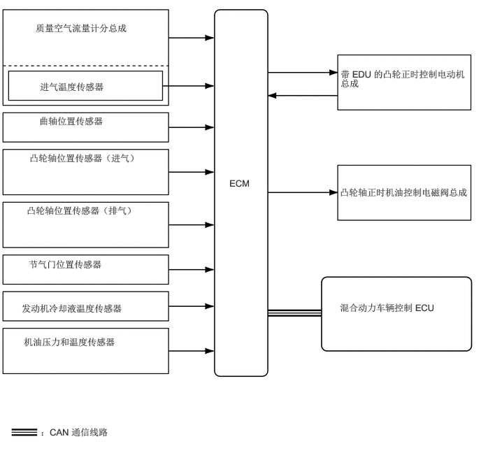

3.417,2.646 3.885,2.854
0.458,0.198
10
false
ECM
0.531,0.333 2.781,0.604
2.24,0.26
10
false
质量空气流量计分总成
0.594,1.208 2.521,1.448
1.917,0.229
10
false
进气温度传感器
0.583,1.719 2.021,1.948
1.427,0.219
10
false
曲轴位置传感器
0.438,2.271 2.083,2.667
1.635,0.385
10
false
凸轮轴位置传感器（进气）
0.396,3.052 2.042,3.448
1.635,0.385
10
false
凸轮轴位置传感器（排气）
0.427,3.854 1.969,4.104
1.531,0.24
10
false
节气门位置传感器
0.323,4.51 2.573,4.76
2.24,0.24
10
false
发动机冷却液温度传感器
0.354,5.01 2.229,5.458
1.865,0.438
10
false
机油压力和温度传感器
0.604,6.354 2.333,6.583
1.719,0.219
10
false
：CAN 通信线路
5.073,1.021 6.979,1.51
1.896,0.479
10
false
带 EDU 的凸轮正时控制电动机总成
5.063,2.781 7.115,3.313
2.042,0.521
10
false
凸轮轴正时机油控制电磁阀总成
5.063,4.5 6.802,4.938
1.729,0.427
10
false
混合动力车辆控制 ECU